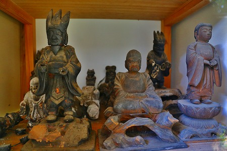

修那羅山安宮神社周辺にある不思議な石仏群。
前半は社殿の裏手にある石仏群を紹介したが、後半は社殿の左手に並ぶ石仏を紹介していこう。
社殿を正面に見て左側は尾根筋にあたる部分で、その尾根に沿って山道がある。
その山道に石仏が点在しているのだ。
社殿裏手はこれといって法則性もなくバラバラに点在していたが、尾根筋の石仏は一本道沿いに点在しているので横並びになっている。
そのためあちこち移動せず、探索するこちらとしては非常に見つけやすい。
そしてこちらにも摩訶不思議な石像がたくさんあるのだ。
コレは「さ〃やキ（ささやき？）大明神」とも「たこやキ大明神」とも読める。
どちらか不明だが、どっちかというと
後者であって欲しい。
頭が面相筆みたいになっちゃっている石像。何の神様やら。
親子なのだろうか？目が似てますよね。
こんな感じで路傍に点々と石像が並んでいる。全部で800体もあるという。
ちなみにここの石像は全てこの神社の摂末社という扱いだ。
こちらも目が似てます。同じ作者なんだろう。
馬頭観音だろう。明治時代の作。
こちらも不思議な石像だ。
武神なのだろうか、右は大銑皇神、左は大？（土編に口）皇神とある。
珍しい平面的な彫り。
これもまた何の神様か判らないが印象的な石像。
刀を差し、両手にも武器を持っているようだ。
異様に大きい目、裾を捲っているいるようだが、何か火急の事態か？

こちらは何かをかぶっちゃった大日如来…なのか。どした。
左の首が飛んじゃった石像も気になるんだよなあ。

和製スフィンクス、てな感じ。
馬に乗った武神なのか。
子供を抱いているんだと思います。
頭にガラスが刺さっちゃってるみたいだ。
こちらもガラスが刺さっているか闘気がみなぎっているか静電気で髪が逆立っているか、どれか。
でも線刻された表情はどこか楽しそう。
道に佇む犬神。
見れば顔の半分が剥離しちゃってる。可哀そうに。
そうこうしている内に一番奥のエリアまで来たようだ。
岩陰に多くの石像が奉納されている。
こんな感じで。
こちらは農神。
石像に供えられた木札は他の霊場に行って授かってきたもの。
摩利支天。ここの石像の中では比較的精巧な造りだ。
摩滅しちゃって3割増しに顔が怖くなっちゃっている不動サマ。
福禄寿、だと思う。
道端の目に着きにくいところにもひっそりと小さな石仏が立っていたりする。
シメは長野らしく道祖神で。
…というわけで、他ではあまり見る事のない神様がたくさん見ることが出来て大変満足だった。
インディーズ信仰が盛り上がるにつれ、次から次へと
信仰のインフレ化が進み新キャラを生み出していったのだろうか。
面白いのでこれからもこのような奇天烈な教団が現れることを願うものである。
ま、乱世はノーサンキューですけどね。
…という訳で再び社殿へ戻る。
お、修那羅大天武サマのお札！
手摺には五円玉が括り付けられていた。
そして本殿左側にある建物を覗いてみたら…
屋内にもこれまた何とも言えない木像が並んでいるではないか！

屋内の木像も仏像とも神像ともつかぬ像がたくさん並んでいる。
鬼、なのかな？どちらかというと妖怪とかに近い感じ。
ちなみにこの日はポケモンGOが日本でサービス開始された日だった。
世のキッズたちが夢中になって路上でモンスターをゲットしている同時刻に、俺は誰もいない山の中で
別のモンスターを黙々とゲットしていたよ…